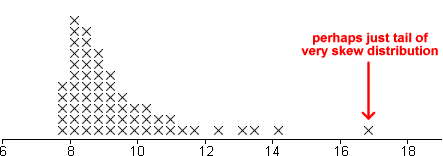
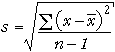
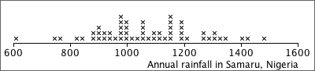
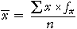

If you don't want to print now,
Information from the variation in data
Variation in data is not simply an annoyance — the variation itself can hold important information.
Simply sorting a data set into order can highlight features that are not obvious in the raw data, such as the lack of values between 3.4 and 4.9 in the data below.
| 6.1 | 5.2 | 7.9 | 2.3 | 3.4 |
| 1.4 | 5.3 | 7.1 | 3.2 | 2.8 |
| 5.1 | 6.9 | 6.1 | 3.4 | 5.2 |
| 5.5 | 2.0 | 1.3 | 4.9 | 6.4 |


Clusters
If a dot plot, stem and leaf plot or histogram separates into two or more groups of values (clusters), this suggests that there may be more fundamental differences between the 'individuals' in the groups.
Mixed class widths
For some data sets, wider classes give a smoother histogram in some ranges of values (e.g. in the tail of a distribution) and narrower classes are better in other parts of the distribution (usually where there is greater density of values).
In a correctly drawn histogram, each value contributes the same area.
Histograms can be drawn with mixed class widths, but it would be badly misleading to make the rectangle heights equal to either the class frequency or relative frequency.

Height of a histogram rectangle
To draw a histogram by hand with equal class widths, each class rectangle can be drawn with height equal to its class frequency. If class widths vary, we need to calculate the density for each class with the formula:

and use this for the rectangle heights.
Unhelpful detail when comparing groups
Dot plots, stem and leaf plots and histograms contain a lot of detail about the distribution of values in a data set. This level of detail is useful when examining a single data set, but when several groups of values are being compared, the detail distracts from the main differences between the groups.
For example, the jittered dot plots below do not concisely summarise the differences between the five groups.

Box plots and clusters
Box plots cannot show clusters in data.

We will describe centre and spread with numerical values called summary statistics. They provide particularly concise and meaningful comparisons of different groups.
Simple summaries of centre and spread
Information from median and interquartile range
Given the median and interquartile range, it is possible to sketch a bell-shaped histogram that matches these values. Such a 'guess' is often close to the actual distribution of values.

Median
Half of the data values are below the median and half are above it:

Mean
The mean is:

If each value in a dot plot was a solid object resting on a beam with negligible mass, the mean is the value at which the beam will balance.

The standard deviation is denoted by the letter s and is defined by:

The numerator,  , depends on the distances of the values to the mean, so it will be small if the values are all close to the mean and big if they are far from the mean.
, depends on the distances of the values to the mean, so it will be small if the values are all close to the mean and big if they are far from the mean.
Variance
The square of the standard deviation, s2, is called the sample variance. Variances are sometimes reported and used but standard deviations are easier to interpret since they have the same units as the original data (e.g. kilograms or dollars).
'Quarter-range' rule of thumb
For many data sets, the standard deviation is just under a quarter of the range.
 |
This is a simple rule, but is only very approximate. The standard deviation can be more than a quarter the range in distributions with short tails or much less if there are long tails or outliers.
The 70-95-100 rule of thumb
The 70-95-100 rule is more accurate. In many distributions,
The 70-95-100 rule holds approximately for most reasonably symmetric data sets, but for skew data or distributions with long tails, outliers or clusters, it is often less accurate.
Understanding the definition of the standard deviation is much less important than knowing its properties and having a feel for what its numerical value tells you about the data.
Guessing s from histogram
About 95% of the values should be within 2s of the mean, so after dropping the top 2.5% and bottom 2.5% of the values (histogram area), the remainder should span approximately 4s. Dividing this range by 4 should approximate the standard deviation.

Sketching a histogram from the mean and s
Similarly, you should be able to draw a rough sketch of a symmetric histogram with any mean and standard deviation that you are given. (It would be centred on the mean and 95% of the area would be within 2s of this.)
The shape of a distribution
| The mean and standard deviation hold no information about the shape of a distribution, other than its centre and spread. |
Many different distributions have the same mean and standard deviation.

The units of the variance are the square of the units of the original values. For example, if the values are weights, the standard deviation might be 6 kg, but the variance would be 36 square kg. Since its units are easier to interpret, standard deviations are more easily understood measures of spread, but variances are important in advanced statistics. (An important collection of methods for analysing relationships between variables is called analysis of variance.)
Degrees of freedom (optional)
The divisor (n − 1) in the formula for the sample standard deviation is called its degrees of freedom. This is the number of 'independent pieces of information' that contribute to it.
Distance of values from a target, k
The distance of a single random value from a target is called its error.

Root mean squared error
One solution to the problem of negative errors is to square them before averaging,
mean squared error = 
To express this in the original units of the data (instead of units such as squared kg), we can take its square root:
root
mean squared error = 
The root mean squared error is a 'typical' error.
Distances from the centre of the distribution
The population standard deviation is similar to the root mean square error but summarises the distances of the values from the centre of their distribution. It summarises the spread of values in the data.
population standard deviation = 
This can be illustrated graphically — the squared standard deviation is the average of the squared distances of values to their mean:

Standard deviations in reports are likely to be sample standard deviation.
Annual rainfall in Samaru, Nigeria
In most of Africa, the most important climatic variable is rainfall. Rainfall is usually highly seasonal and failure of crops is normally associated with late arrival of rain or low rainfall. A better understanding of the distribution of rainfall can affect the crops that are grown and when they are planted.
The annual rainfall (in mm) in Samaru, Northern Nigeria between 1928 and 1983 will be used as an example in this section.

This family of power transformations includes many common ones:

Effect of power transformations
Power transformations affect the skewness of data.
If a power transformation with p > 1 is applied to data with a symmetric distribution, it will make the data skew with a long right tail. If the power transformation has p < 1, the distribution will become one with a long left tail.
In practice, power transformations are used to do the opposite. They can change many skewness distributions into fairly symmetric ones.
It is important to distinguish two types of numerical data.
Dot plots for counts
Dot plots can be used to display count data. However since discrete values are often repeated several times in a data set, the crosses need to be jittered or, preferably, stacked.

More generally,

where the summation is over the distinct values in the data set, rather than all individuals.
Calculating the standard deviation
A similar formula holds for the standard deviation, using the formula